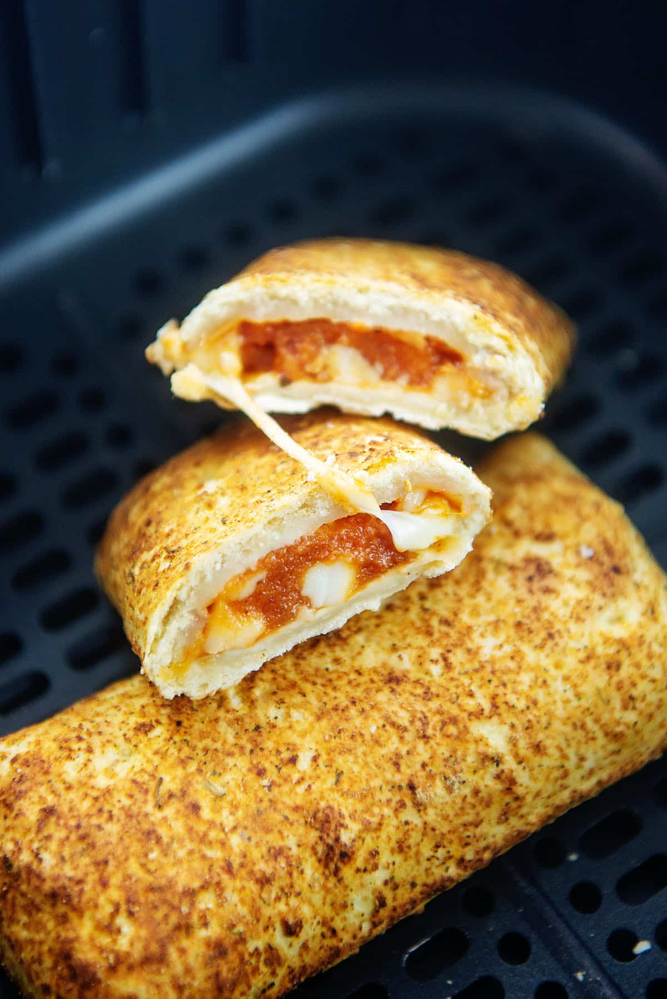

Hotpocket

By the end of this recipe, you'll have a molten hot Hotpocket!
Ingrediants
- 1 hotpocket
- Microwave
- 3 Souls of the damned
Steps
- Let's start things off right by removing the skin from the hotpocket. We are of course referring to the plastic liner. You may save this for later.
- Place the hotpocket directly on the microwave plate without any form of protection or napkin. IMPORTANT: This ensures the next person who uses the microwave has a huge pile of hotpocket innerds to deal with.
- Set the timer to 33 minutes, and proceed to forget about the microwave for 2 days because you were drunk when you wanted this hotpocket.
- Enjoy!
Home